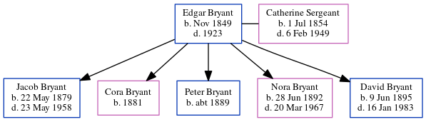

Hazel S Bryant (née Lutes) 1902 - 1984
[ Home ] | [ Calendar ] | [ Surnames Index ] | [ Errors ] | [ Family History ]Hazel Lutes, the wife of David Bryant (the third cousin three-times-removed on the mother's side of Nigel Horne), was born in Marcellus, Cass, Michigan, USA on 4 Jul 19021,2,3,4,5. She married David in Elkhart, Elkhart, Indiana, USA on 29 May 19216.
During her life, she was living in La Porte, LaPorte, Indiana on 1 Jan 19209; and in Elkhart on 1 Apr 193010 and on 1 Apr 19408.
She died in Nov 1984 in Elkhart3,5 and was buried in Rice Cemetery, Elkhart, Indiana after 1 Nov 19847.
Citations
- Indiana Marriages 1811-1959 - Findmypast
- Indiana, Marriages, 1780-1992 - Findmypast
- Social Security Death Index - Findmypast
- United States Marriages - Findmypast
- United States Obituary Notices - Findmypast
- United States Marriages - Findmypast
- Find A Grave http://www.findagrave.com
- US Census 1940 - Findmypast (was age 37 and the wife of the head of the household)
- US Census 1920 - Findmypast (was age 17 and the daughter of the head of the household)
- US Census 1930 - Findmypast (was age 27 and the wife of the head of the household)
Media
David Bryant - Hazel Lutes - Headstone

Indiana, Marriages, 1780-1992 - B~R_327763490
Indiana Marriages 1811-1959 - R_21670086561/2
Social Security Death Index - USBMD/SSDI/308031737
US Census 1940 - USC/1940/1463162905
United States Marriages - FS/MAR/37998816/2
US Census 1910 - USC/1910/004971205/00595/035
1930 US Census Transcription - USC-1930-004950600-00616-007
US Census 1930 - USC/1930/004950600/00616/008
United States Marriages - R_327763490/2
United States Obituary Notices - US/TRIB/035152605
Family Tree
Map
Generated by ged2site. Last updated on Jul 3, 2024
Known Issues
No records of living with anyone
Adding date of burial as 'aft Nov 1984'